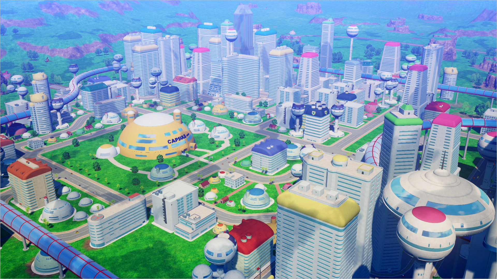
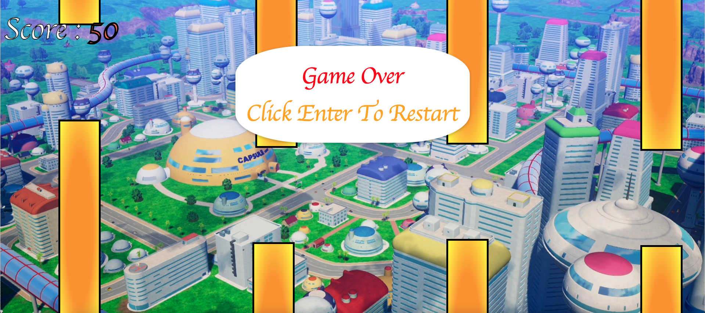

Welcome to Velocity Goku, a Dragon Ball themed Flappy Bird game with a twist. The game starts of easy but don't get too confident as the more you score the harder it gets. Several difficulty modifiers will stand in your path to be the very best, whether its smaller columns or increased gravity Velocity Goku will give you a different challenge other Flappy Bird games haven't shown you.
Start Screen
Game Over Screen Screen